Code
library(tidyverse)
library(ggplot2)
library(bayesma)
theme_set(theme_minimal(base_size = 12))A workflow function for exploratory analysis of dependent effect sizes
library(tidyverse)
library(ggplot2)
library(bayesma)
theme_set(theme_minimal(base_size = 12))Meta-analyses of dependent effect sizes routinely involve complex hierarchical data — multiple effect sizes nested within samples, samples nested within studies, moderator variables at several levels, and auxiliary statistics like standard errors that behave differently across effect size metrics. Before fitting any formal model, a careful analyst needs to understand what’s actually in the database.
The PRIMED workflow (PReliminary Investigation of MEta-analytic Databases) proposed by Pustejovsky, Zhang, and Tipton (2026) organises this preliminary work into four sequential steps:
Crucially, the effect size distribution is examined last, which preserves some room to refine modelling decisions without being influenced by the results themselves.
This vignette demonstrates the primed() function, which automates the workflow — producing the summary tables and visualisations for each step in a single call. We illustrate using a synthetic meta-analytic dataset that mimics the structure of a psychosocial intervention review.
We simulate a dataset resembling a meta-analysis of psychosocial interventions with 30 studies and around 50 samples contributing roughly 200 dependent effect sizes (SMDs). The dataset includes features typical of social-science meta-analyses: some studies contribute multiple participant samples, most samples contribute multiple effects (measured at different follow-up times or using different outcome instruments), and several moderators have missing values.
set.seed(2026)
n_studies <- 30
studies <- tibble::tibble(
study = paste0(
sample(c(
"Adams", "Baker", "Chen", "Davis", "Evans", "Fischer", "Garcia",
"Harris", "Ibrahim", "Jones", "Kim", "Lee", "Martinez", "Nguyen",
"O'Brien", "Patel", "Quinn", "Reyes", "Smith", "Turner",
"Ueda", "Vasquez", "Wang", "Xu", "Yang", "Zhang", "Ali",
"Brown", "Clark", "Diaz"
), n_studies, replace = FALSE),
" ",
sample(2010:2023, n_studies, replace = TRUE)
),
n_samples = sample(c(1, 1, 1, 1, 2, 2, 3), n_studies, replace = TRUE),
mean_age = round(rnorm(n_studies, mean = 52, sd = 12), 1),
pct_female = pmin(100, pmax(0, round(rnorm(n_studies, 65, 22)))),
intervention = sample(
c("CBT", "Mindfulness", "Education", "Creative Arts", "Multimodal"),
n_studies, replace = TRUE,
prob = c(0.30, 0.25, 0.20, 0.15, 0.10)
),
control_type = sample(
c("Standard Care", "Attention Control"),
n_studies, replace = TRUE,
prob = c(0.75, 0.25)
)
) |>
# Introduce missingness in mean_age (~10%) and pct_female (~7%)
dplyr::mutate(
mean_age = dplyr::if_else(runif(n_studies) < 0.10, NA_real_, mean_age),
pct_female = dplyr::if_else(runif(n_studies) < 0.07, NA_integer_, pct_female)
)
samples <- studies |>
tidyr::uncount(n_samples) |>
dplyr::group_by(study) |>
dplyr::mutate(
sample_id = paste0(study, "-S", dplyr::row_number()),
n_total = sample(30:250, dplyr::n(), replace = TRUE)
) |>
dplyr::ungroup()
n_total_samples <- nrow(samples)
samples <- samples |>
dplyr::mutate(
n_effects = sample(
1:8, n_total_samples, replace = TRUE,
prob = c(0.15, 0.25, 0.20, 0.15, 0.10, 0.07, 0.05, 0.03)
)
)
meta_df <- samples |>
tidyr::uncount(n_effects) |>
dplyr::group_by(sample_id) |>
dplyr::mutate(
es_id = dplyr::row_number(),
outcome_measure = sample(
c("FACIT-Sp", "FACIT-Sp-Ex", "WHOQOL", "SF-36", "Custom"),
dplyr::n(), replace = TRUE,
prob = c(0.40, 0.20, 0.15, 0.15, 0.10)
),
weeks_follow_up = sample(
c(4, 8, 12, 16, 24, 36, 52),
dplyr::n(), replace = TRUE
)
) |>
dplyr::ungroup()
study_effects <- studies |>
dplyr::select(study) |>
dplyr::mutate(theta_study = rnorm(dplyr::n(), mean = 0.25, sd = 0.30))
meta_df <- meta_df |>
dplyr::left_join(study_effects, by = "study") |>
dplyr::group_by(sample_id) |>
dplyr::mutate(
theta_sample = theta_study + rnorm(1, 0, 0.10),
se = sqrt(4 / n_total + 0.02),
df = n_total - 2,
yi = theta_sample + rnorm(dplyr::n(), 0, 0.15) + rnorm(dplyr::n(), 0, se)
) |>
dplyr::ungroup() |>
dplyr::select(
study, sample_id, es_id, yi, se, df, n_total,
intervention, control_type, outcome_measure,
mean_age, pct_female, weeks_follow_up
)
# Plant one obvious outlier for diagnostic interest
meta_df <- meta_df |>
dplyr::mutate(
yi = dplyr::if_else(study == dplyr::first(study) & es_id == 1, 2.1, yi)
)Let’s look at the structure:
dplyr::glimpse(meta_df)Rows: 159
Columns: 13
$ study <chr> "Clark 2017", "Clark 2017", "Clark 2017", "Clark 2017"…
$ sample_id <chr> "Clark 2017-S1", "Clark 2017-S2", "Clark 2017-S2", "Cl…
$ es_id <int> 1, 1, 2, 3, 4, 5, 6, 7, 1, 2, 3, 4, 1, 2, 3, 1, 1, 2, …
$ yi <dbl> 2.10000000, 2.10000000, 0.43128920, 0.23693691, 0.8693…
$ se <dbl> 0.1911254, 0.2381118, 0.2381118, 0.2381118, 0.2381118,…
$ df <dbl> 240, 107, 107, 107, 107, 107, 107, 107, 91, 91, 91, 91…
$ n_total <int> 242, 109, 109, 109, 109, 109, 109, 109, 93, 93, 93, 93…
$ intervention <chr> "CBT", "CBT", "CBT", "CBT", "CBT", "CBT", "CBT", "CBT"…
$ control_type <chr> "Standard Care", "Standard Care", "Standard Care", "St…
$ outcome_measure <chr> "WHOQOL", "FACIT-Sp-Ex", "WHOQOL", "FACIT-Sp-Ex", "WHO…
$ mean_age <dbl> 65.3, 65.3, 65.3, 65.3, 65.3, 65.3, 65.3, 65.3, 65.3, …
$ pct_female <dbl> 78, 78, 78, 78, 78, 78, 78, 78, 78, 78, 78, 78, 82, 82…
$ weeks_follow_up <dbl> 8, 4, 24, 4, 36, 24, 4, 8, 24, 8, 36, 24, 36, 24, 24, …cat("\nStudies:", dplyr::n_distinct(meta_df$study))
Studies: 30cat("\nSamples:", dplyr::n_distinct(meta_df$sample_id))
Samples: 48cat("\nEffect sizes:", nrow(meta_df), "\n")
Effect sizes: 159 This dataset has the hallmarks of a typical social-science meta-analysis with dependent effects: hierarchical nesting, multiple outcome measures, varying follow-up times, and moderators at different levels with some missingness.
A single call to primed() runs all four steps:
results <- primed(
data = meta_df,
es_col = "yi",
se_col = "se",
study_col = "study",
sample_col = "sample_id",
n_col = "n_total",
moderators = c("intervention", "control_type", "outcome_measure",
"mean_age", "pct_female", "weeks_follow_up"),
es_type = "SMD",
df_col = "df",
rho_values = c(0.3, 0.5, 0.7)
)
print(results)PRIMED Workflow Results
======================
Summary:
Studies (J): 30
Samples (M): 48
Effect sizes (K): 159
Effects per sample: median = 3 , range = 1 - 8
Samples per study: median = 1 , range = 1 - 3
Available plots ( 17 ):
- step1_es_per_sample
- step1_samples_per_study
- step1_sample_sizes
- step2_cat_intervention
- step2_cat_control_type
- step2_cat_outcome_measure
- step2_cont_mean_age
- step2_cont_pct_female
- step2_cont_weeks_follow_up
- step3_se_by_sample
- step3_scaled_se
- step3_isc_weights
- step4_es_density
- step4_sample_es_density
- step4_forest
- step4_funnel
- step4_funnel_sample
Available tables ( 8 ):
- step1_structure
- step1_sample_sizes
- step2_missingness
- step2_cooccurrence
- step2_decomposition
- step3_isc_weights
- step4_outliers_effect
- step4_outliers_sample The first step counts observations at each level and visualises how effects are nested within higher-level units.
results$tables$step1_structure# A tibble: 3 × 2
Level Count
<chr> <int>
1 Studies (J) 30
2 Samples (M) 48
3 Effect sizes (K) 159results$plots$step1_es_per_sample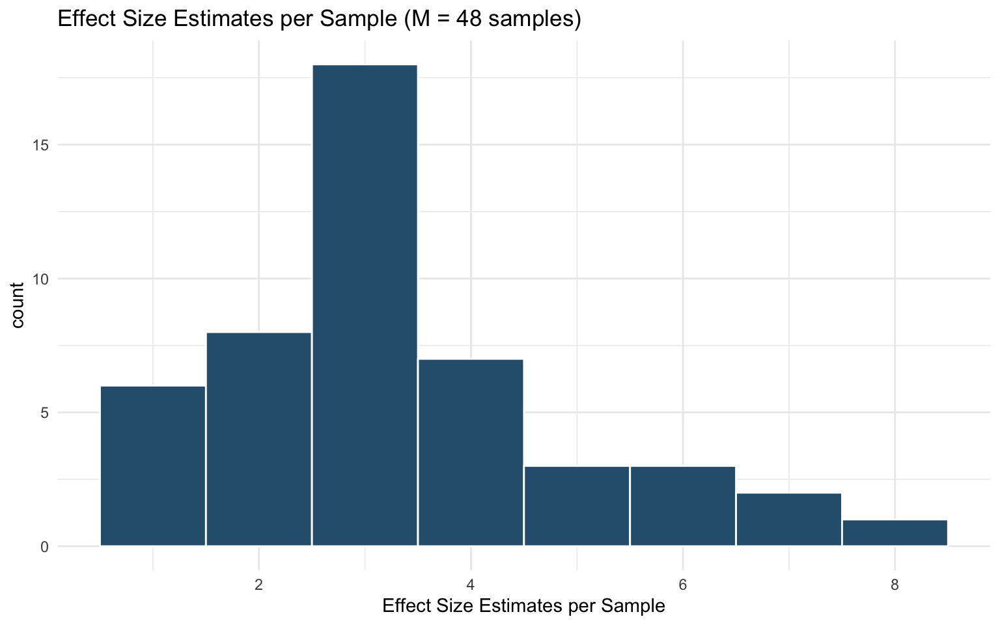
What to look for: wide variation means some samples contribute far more information than others. A handful of high-\(k\) samples can dominate meta-analytic estimates if dependency isn’t modelled carefully.
results$plots$step1_samples_per_study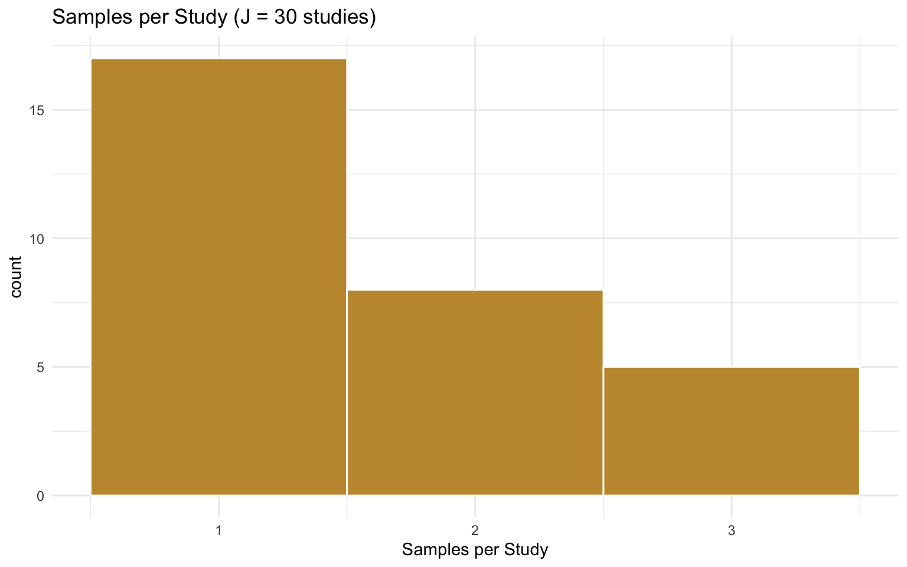
When several studies contribute multiple samples, a three-level model (effects within samples within studies) becomes feasible and potentially important.
results$plots$step1_sample_sizes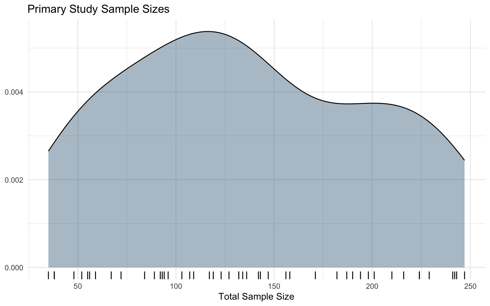
results$tables$step1_sample_sizes# A tibble: 1 × 7
Mean SD Min Q1 Median Q3 Max
<dbl> <dbl> <int> <dbl> <dbl> <dbl> <int>
1 136. 63.8 35 91.2 132 191 247What to look for: highly skewed sample sizes mean a few large studies will carry disproportionate weight. This interacts with the ISC weight analysis in Step 3.
Step 2 examines every moderator, classifying each as categorical or continuous and producing appropriate summaries.
For each categorical moderator, a paired bar chart shows the number of studies and number of effects per level:
results$plots$step2_cat_intervention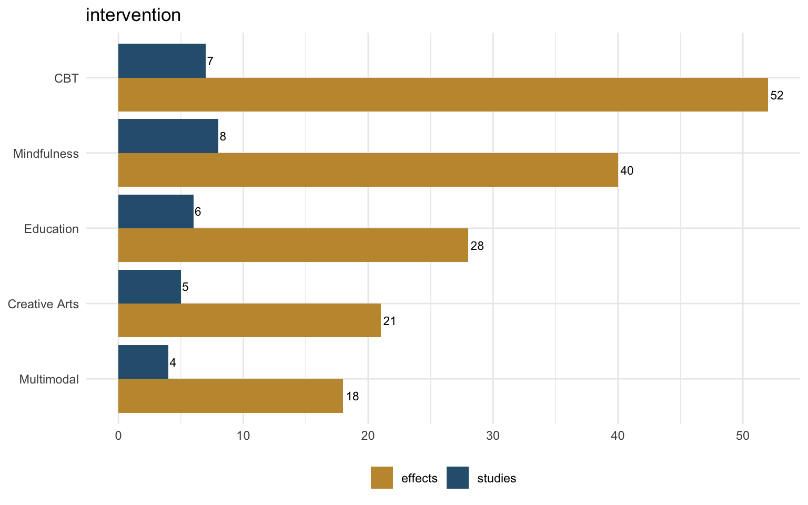
results$plots$step2_cat_control_type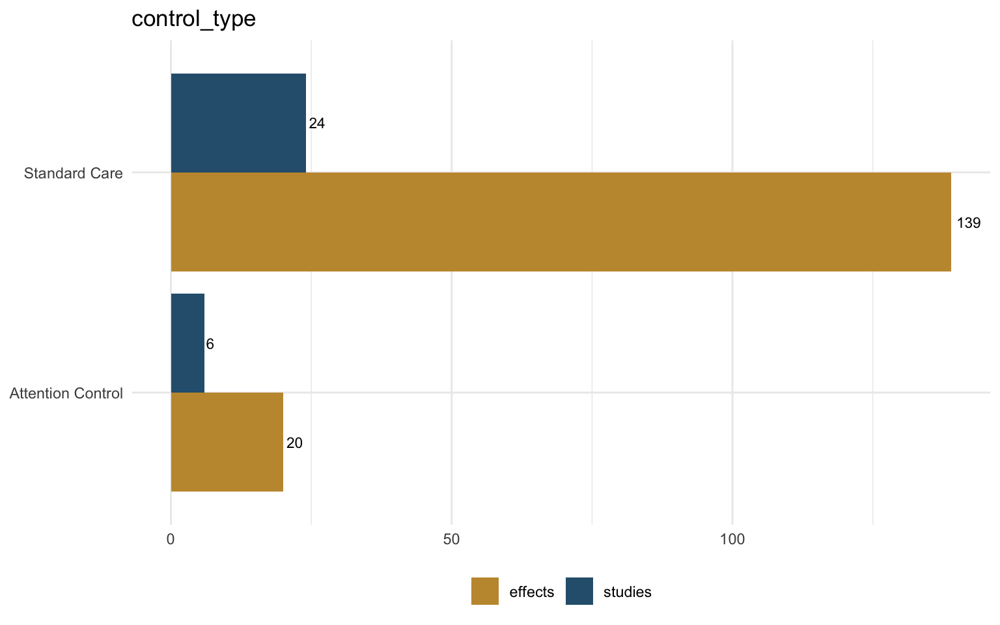
results$plots$step2_cat_outcome_measure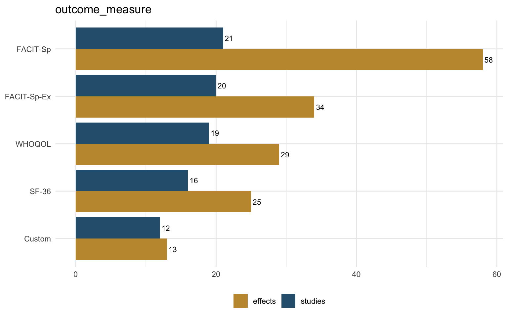
What to look for:
results$plots$step2_cont_mean_age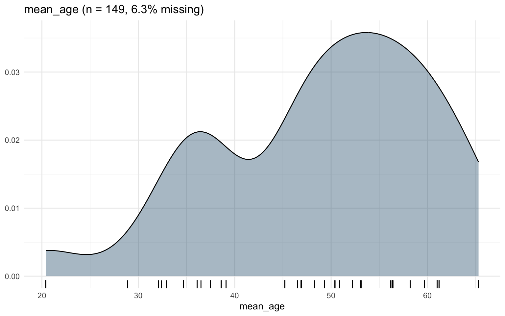
results$plots$step2_cont_pct_female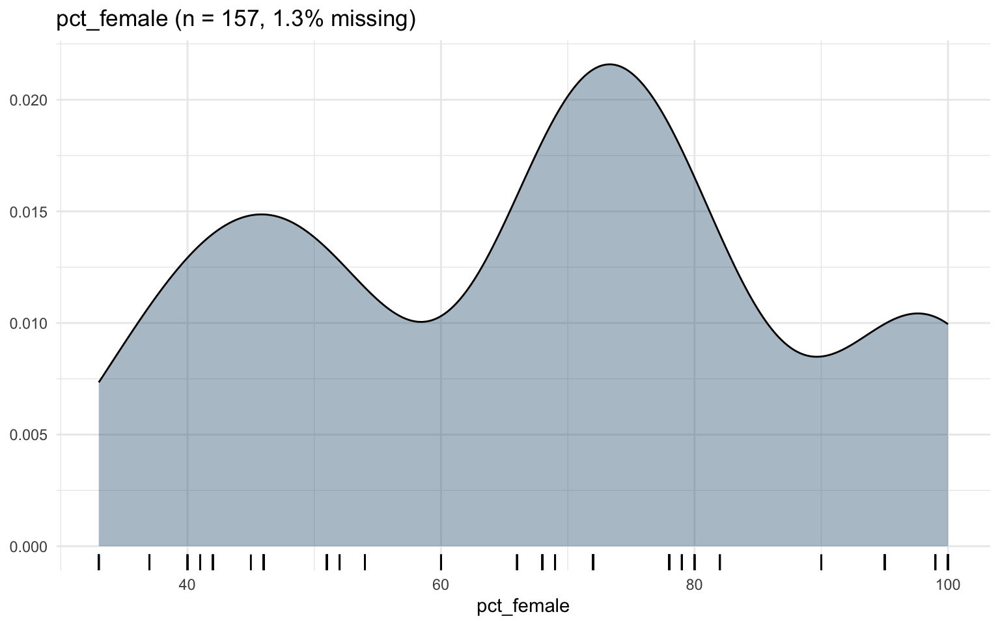
results$plots$step2_cont_weeks_follow_up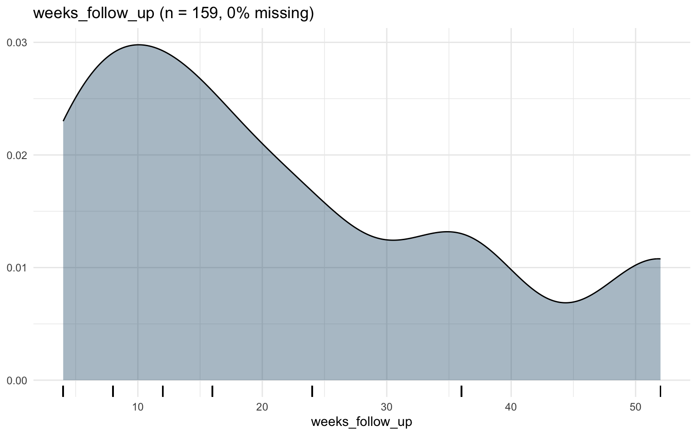
results$tables$step2_missingness# A tibble: 6 × 3
moderator n_missing pct_missing
<chr> <int> <dbl>
1 intervention 0 0
2 control_type 0 0
3 outcome_measure 0 0
4 mean_age 10 6.3
5 pct_female 2 1.3
6 weeks_follow_up 0 0 This table lets you see at a glance which moderators have enough data to include in meta-regression. Variables with high missingness may need to be excluded or handled via multiple imputation.
For categorical moderators, a co-occurrence table shows how often pairs of categories appear within the same study:
results$tables$step2_cooccurrence$cooccurrence_intervention# A tibble: 5 × 6
level CBT `Creative Arts` Education Mindfulness Multimodal
<chr> <chr> <chr> <chr> <chr> <chr>
1 CBT "7 (52)" "" "" "" ""
2 Creative Arts "" "5 (21)" "" "" ""
3 Education "" "" "6 (28)" "" ""
4 Mindfulness "" "" "" "8 (40)" ""
5 Multimodal "" "" "" "" "4 (18)" Diagonal cells report the total number of studies (and effects) for each level. Off-diagonal cells with non-empty values represent studies that include both levels — i.e., within-study variation. Completely empty off-diagonals mean the moderator has no within-study variation, so its explanatory power comes entirely from between-study differences (which are confounded with other study characteristics).
For continuous moderators, a decomposition table separates each variable into between-sample and within-sample components via group-mean centring:
results$tables$step2_decomposition$decomposition_weeks_follow_up# A tibble: 3 × 9
Component `% Missing` Mean SD Min Q1 Median Q3 Max
<chr> <dbl> <dbl> <dbl> <dbl> <dbl> <dbl> <dbl> <dbl>
1 Effect-Level 0 2.20e+ 1 15.8 4 8 16 36 52
2 Sample-Level Aver… 0 2.20e+ 1 7.69 5.33 16.7 22 25.5 44
3 Sample-Mean-Cente… 0 -3.12e-16 13.8 -26.7 -10.9 -2.67 8.97 36.8The “Sample-Mean-Centered” row captures within-sample variation. Substantial spread here means you can estimate within-sample moderation effects (which are less confounded than between-sample effects). Contrast this with a study-level variable like mean_age, where the within-sample component should be near zero:
results$tables$step2_decomposition$decomposition_mean_age# A tibble: 3 × 9
Component `% Missing` Mean SD Min Q1 Median Q3 Max
<chr> <dbl> <dbl> <dbl> <dbl> <dbl> <dbl> <dbl> <dbl>
1 Effect-Level 6.29 49.1 11.1 20.4 39.1 52.2 56.4 65.3
2 Sample-Level Average 6.29 49.1 11.1 20.4 39.1 52.2 56.4 65.3
3 Sample-Mean-Centered 6.29 0 0 0 0 0 0 0 Step 3 focuses on the auxiliary statistics that drive modelling but aren’t the primary quantity of interest.
results$plots$step3_se_by_sample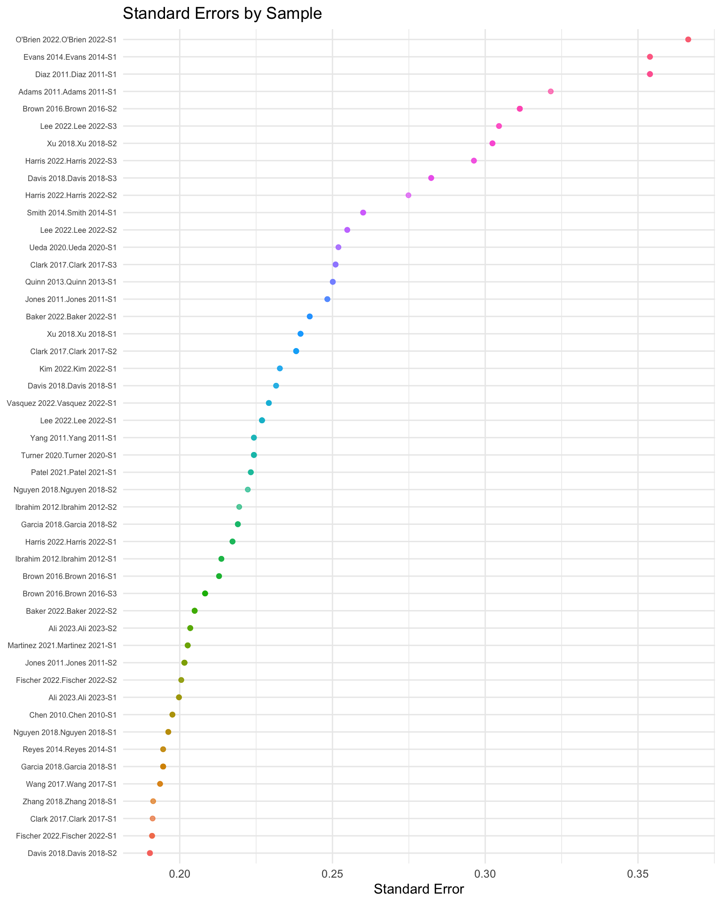
What to look for: rows with wide scatter warrant investigation. Common causes include multi-arm trials with unequal \(n\) per arm, differential attrition across follow-ups, or varying missing data across outcome measures.
The SE of a standardised mean difference depends on the SMD itself, inducing artefactual variation. The scaled SE removes this:
\[ SE_{\text{scaled}} = \sqrt{SE^2 - \frac{d^2}{2\nu}} \]
results$plots$step3_scaled_se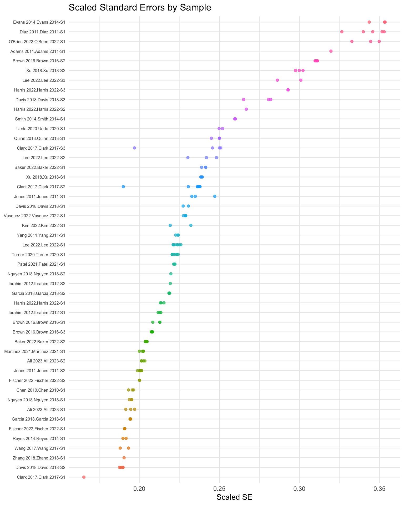
The inverse sampling covariance (ISC) weights show how much each sample contributes to the overall average under a simplified model (no heterogeneity beyond sampling error), as a function of the assumed within-sample correlation \(\rho\):
\[ w_j = \frac{k_j}{\sigma_j^2 \left[(k_j - 1)\rho + 1\right]} \]
results$plots$step3_isc_weights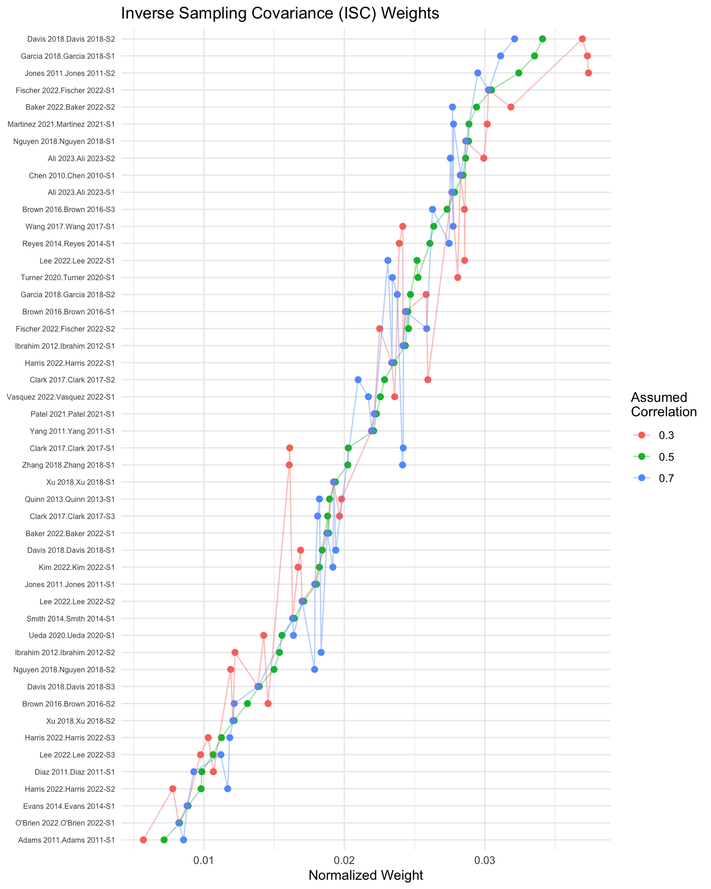
What to look for:
Only now, having validated everything else, do we look at the effect sizes themselves.
results$plots$step4_es_density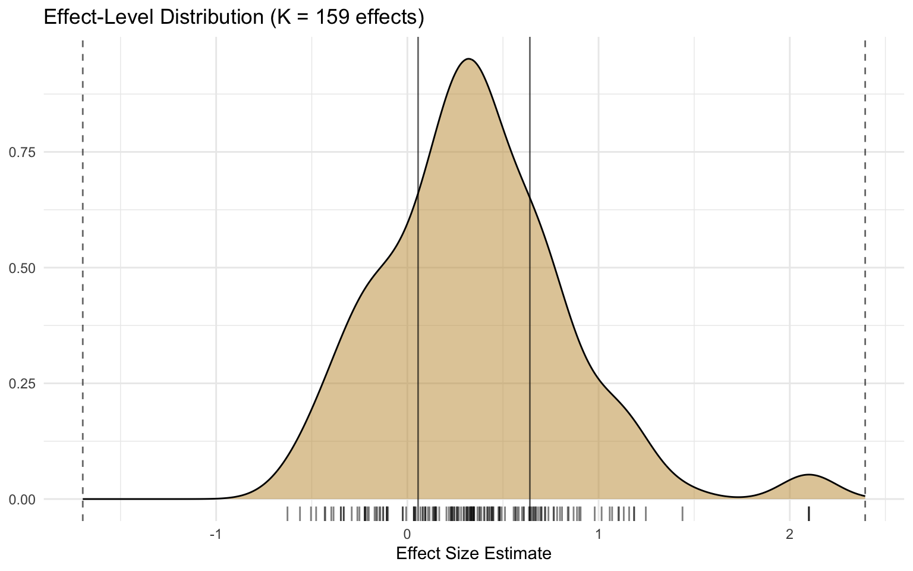
results$plots$step4_sample_es_density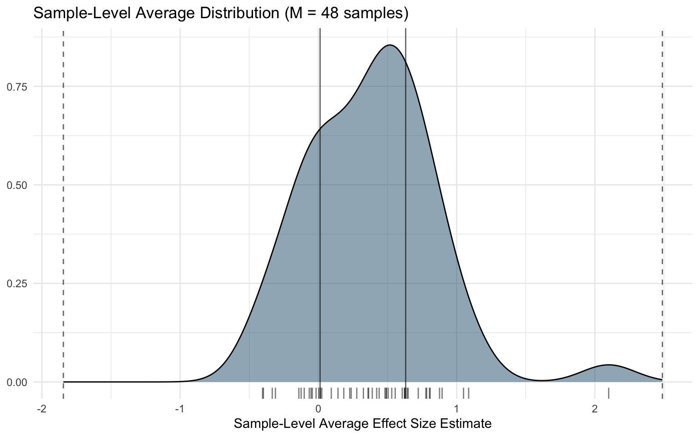
results$tables$step4_outliers_effect# A tibble: 0 × 4
# ℹ 4 variables: .study <chr>, .sample_id <fct>, .es <dbl>, .se <dbl>results$tables$step4_outliers_sample# A tibble: 0 × 3
# ℹ 3 variables: .study <chr>, .sample_id <fct>, .es_avg <dbl>Outliers are flags for investigation, not automatic removal. Check the underlying data: is the value a coding error (wrong sign, decimal misplacement)? A metric mismatch (correlation reported where SMD expected)? Or a genuinely unusual study that is important to report on?
results$plots$step4_forest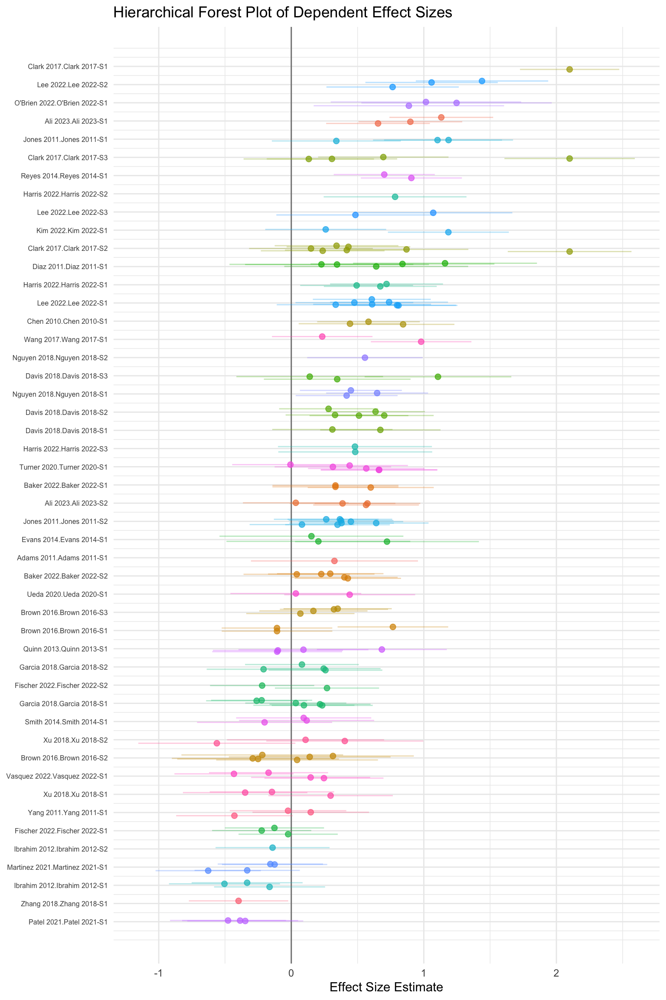
Unlike a conventional forest plot, effects are grouped on a single row per sample. This lets you see:
results$plots$step4_funnel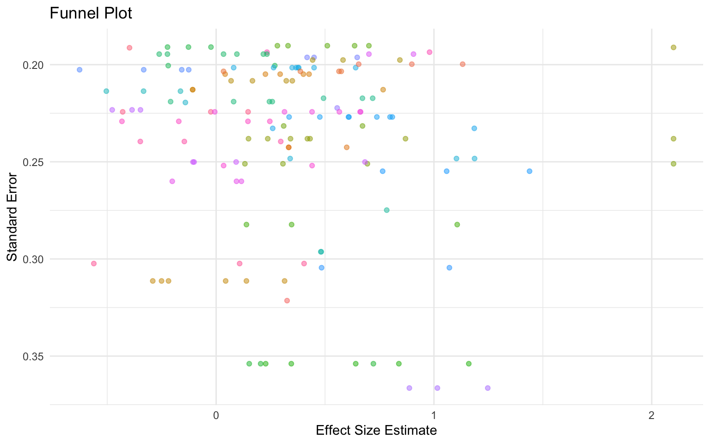
results$plots$step4_funnel_sample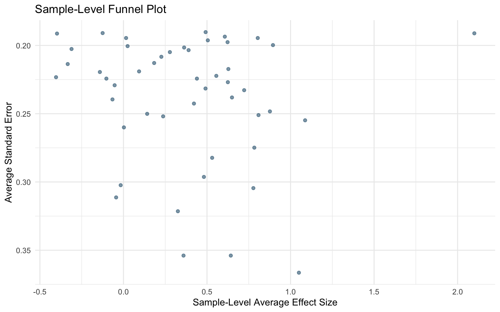
Asymmetry in the funnel plot is a preliminary diagnostic for small-study effects or selective reporting. Formal tests (e.g., Egger’s regression, selection models) should follow.
Since primed() returns raw ggplot objects, you can modify any plot:
results$plots$step4_es_density +
ggplot2::labs(
title = "Distribution of Hedges' g estimates",
subtitle = "Psychosocial interventions for spiritual well-being"
) +
ggplot2::theme(
plot.title = ggplot2::element_text(face = "bold", size = 14),
plot.subtitle = ggplot2::element_text(colour = "grey40")
)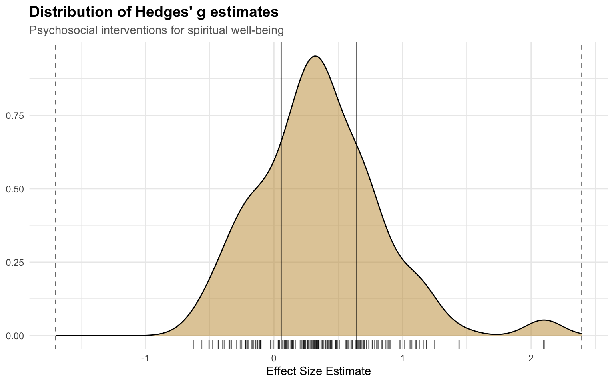
Common extensions beyond the default outputs:
igraph)GGally::ggpairs() for multivariate moderator structureUpSetR for multivariate missingness patternsmetafor::funnel()A reasonable starting point for methods sections:
Prior to fitting meta-analytic models, we conducted a preliminary data analysis following the PRIMED workflow (Pustejovsky et al., 2026). We examined the distribution of effect sizes across studies and samples (Step 1), the marginal and hierarchical structure of candidate moderators (Step 2), the distribution of standard errors and inverse sampling covariance weights under assumed within-sample correlations of \(\rho = 0.3, 0.5, 0.7\) (Step 3), and the distribution of effect size estimates at both the effect and sample levels (Step 4). Full workflow output is available in the supplementary materials.
The primed() function bundles a standard set of preliminary analyses for meta-analyses of dependent effect sizes into a single call, producing the tables and plots recommended in Pustejovsky, Zhang, and Tipton (2026). The intended workflow is:
primed() on your cleaned databaseSharing these outputs makes the pre-modelling phase of meta-analysis visible and reproducible — something the field has historically under-documented.
Pustejovsky, J. E., Zhang, J., & Tipton, E. (2026). A Preliminary Data Analysis Workflow for Meta-Analysis of Dependent Effect Sizes.